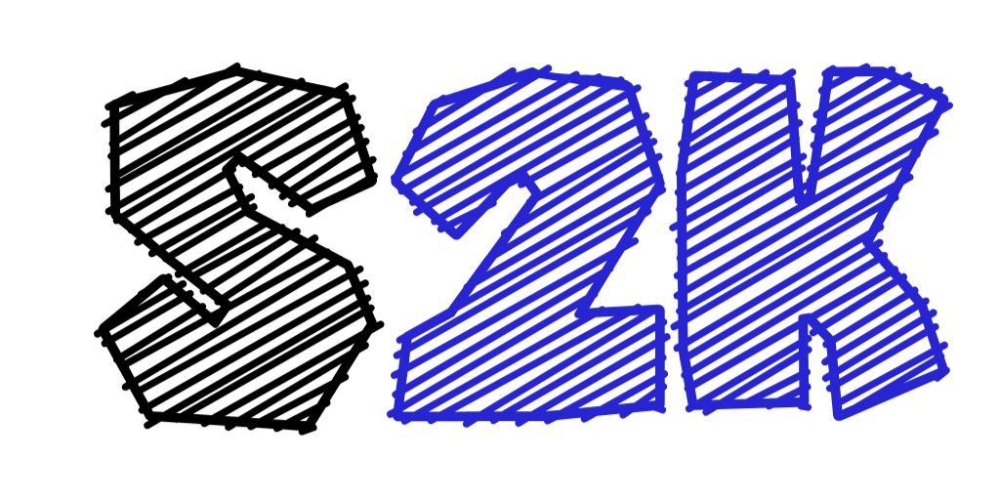

S2K Presenter Console
● Connected to Projector Window
Speaker: Atharv
Slide 01 of 11
Loading slide notes...
◀ Previous Slide (Left)
Next Slide (Right / Space) ▶
Pitch Stopwatch (Target: 7-8 Mins)
00:00
Start
Pause
Reset
Jump to Slide